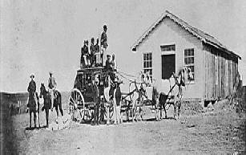

|
Have you
ever wondered why the black soldiers were called Buffalo Soldiers?
The Plains Indians made the name given to the black soldiers, because the
soldiers were black like the buffalo And also had curly hair like the
buffalo. |
 |
|
The Buffalo
Soldiers were made from the 9th and 10th Cavalry, and the 38th, 39th, 40th,
and 41st Infantry Regiments. |
|
|
The 9th
Cavalry was organized September 21 in 1866 at Greenville, Louisiana.
The 9th Cavalry was under the command of Colonel Edward Hatch. |
|
|
The 10th
Cavalry was organized on September 21, 1866 at Fort Leavenworth, Kansas.
The command of the 10th Cavalry was Colonel Benjamin H. Grierson. |
|
|
The 38th and
41st Infantry were also organized in 1866. The 38th Infantry was
commanded by Colonel William and the 41st Infantry was commanded by Colonel
Ronald S. Mackenzie. |
|
|
The 39th and
41st Infantries were also again organized in 1866. In 1869
the 39th Infantry and the 40th Infantry combined to form the 25th Infantry.
|
|
|
The Buffalo
Soldiers were an all black state of army except the officers. They
were white. |
|
|
The duties
of Buffalo Soldiers were mainly to help the Government. They did the
following: |
|
|
-Controlled hostile forces |
-Escorted wagon trains |
|
If you were a Buffalo Soldier
work was very harsh. During each month for the first ten months at
least one soldier died due to diseases. The diseases were mainly cholera
and deadly dietary deficiencies. |
|
The men’s barracks were poorly
ventilated. They were also vermin infested hovels. The only
bathing facilities cons assisted of creeks. The foods the Buffalo
Soldiers were mainly eating were a type of beef, bacon, potatoes, beans,
and fresh vegetables. The workweeks were seven days, and the only
exceptions were the Fourth of July and Christmas. When the troops
weren’t on patrol they engaged in drills, parades, and inspections.
|
|
The Buffalo Soldiers were put upon a hard task. The task was called the Great Bicycle Experiment. The United States Army was looking for a way to replace the horses. After word had gotten out, General Nelson Miles suggested the bicycle. The army assigned this task to some of the 25th Infantry, who were stationed at Fort Missoula, Montana. |
 |
Second Lieutenant James A. Moss
commanded this unit. Moss trained the soldiers on the bicycle for three
weeks. After training for three weeks, the troops could climb nine feet
fences in twenty seconds. Would you believe it if I said the Buffalo
Soldiers had the lowest desertion rate between 1867 through 1898? The
troops consisted of one fifth of army’s forces.
|
The army was so unfair to the
Buffalo Soldiers that the Buffalos Soldiers were given the oldest and most
dirties equipment. They were given the sick horse. Some of the
Buffalo Soldiers even had to walk to battle on foot. Most of their
weapons were broken. The troops living homes were pitiful. Most
lived in the old wet tents. The others lived in old shacks.
They made their beds out of sacks filled with moldy straw. But even
though they didn’t have nice settlements, the troops had one of the most
decorated uniforms the whole century they were in. The weapons the
soldiers carried were the: |
{kind=link}
{kind=link}
{kind=link}
{kind=link}
{kind=link}
|
The Buffalo Soldiers were very
brave. They didn’t care what happened as long as they beat the Indians.
Eighteen Buffalo Soldiers succeeded in hard work to earn the Medal of Honor.
In September of 1868, Major Forsyth lay stretched out by his rotting carcass
of his dead horse on Beecher Island in Colorado Territory. Among him
were a lot of his soldiers lying there dead or wounded. On each of the
riverbanks of the Arikaree River were the Cheyenne and Oglala warrior Indians.
They had had Forsyth's men circled for days. Foryth's men figured
they were going to be killed by the Indians. Then one day they noticed
that some of the Indians had drawn off. Then a little bit later they
saw some Cavalrymen coming across the horizon. They noticed that
the Cavalry was made up of all blacks. The all black Cavalry was
a part of the Buffalo Soldiers. The Buffalo Soldiers
had come to rescue them. Forsyth was even
rescued by the Buffalo Soldiers. One of the last wars the Buffalo
Soldiers fought in was the Spanish American War. The
Spanish American War was fought to get Cuba’s independence from Spain. The Spanish wouldn’t cooperate with the United States
so the United States sent the Buffalo Soldiers on them.
The Buffalo Soldiers fought as hard as they could. The Buffalo Soldiers fought so hard that the Cuban’s
won the war. After that war the Buffalo Soldiers
finally got what the respect they deserved.
Chief Victoria was one of the
biggest enemies of the Buffalo Soldiers. He was
an Apache. One of the Buffalo Soldiers biggest
tasks was to return the Apaches who had left the reservations. They were also to protect Apaches on and off reservations
from cowboys and other who killed Indians for sport.
Some whites made a living by selling Indian scalps to the Mexican
Government. The prices for the scalps were fifty
dollars for a male, twenty-five dollars for a female, and ten dollars for
a child. One of Victoria’s bad decisions was
to start mutilating whites. The Buffalo Soldiers
were mad at him and tried to kill him. On August
6, 1880, at Rattlesnake Springs, Texas, Buffalo Soldiers fought Victoria’s
band of warriors. Victoria tried to attack but
failed to do so. The Buffalo Soldiers counter
attacked temporarily halting the Indians. Indians
fled to Mexico before the Buffalo Soldiers could catch them. On October 14, 1880, Buffalo Soldiers surrounded
Victoria’s camp. They killed Victoria, sixty
warriors, and eighteen women and children. They
held sixty-eight women and children prisoner. This
was the end of Victoria’s Wars with Buffalo Soldiers and the end of Victoria’s
domination.
|
| BIBLIOGRAPHY |